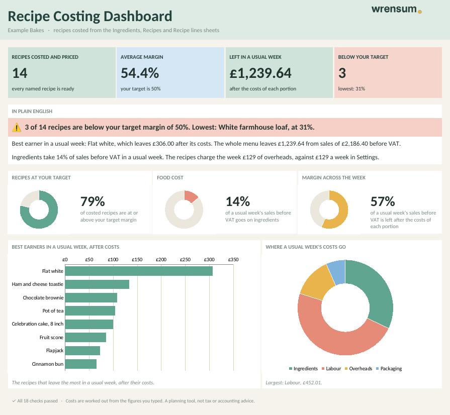
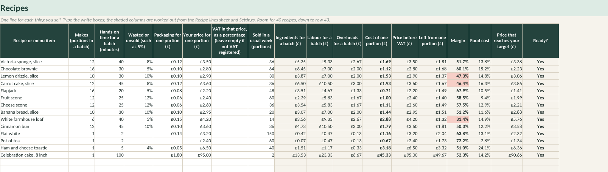
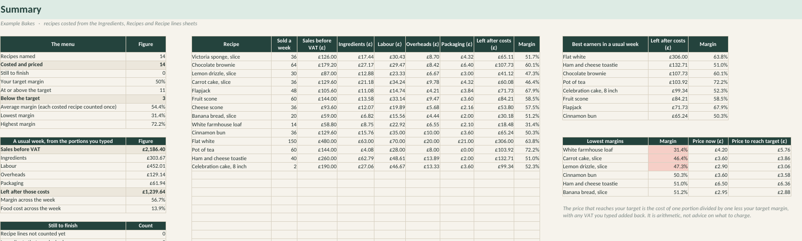
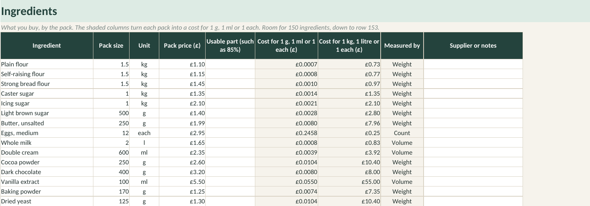

Recipe and Menu Costing Workbook
An Excel workbook for home bakers and small cafes. List what you buy and what goes into each recipe, and it shows what one portion costs to make, the margin at your price, and the price that would reach the margin you are aiming for.
Buy for £9One-off payment. One Excel file (.xlsx), delivered as a download. A planning tool, not tax, legal or accounting advice.

What you get
- An ingredients list for 150 items bought by the pack, turned into a cost for one gram, one millilitre or one item
- A usable part for each ingredient, so peel, trimmings and stalks are paid for by the part you use
- Room for 40 recipes or menu items and 500 recipe lines, each line picked from your own lists
- Cost of one portion from ingredients, hands-on time at your hourly figure, a share of overheads, wastage and packaging
- Margin and food cost for each recipe at your price, with the recipes below your target shaded
- The price that would reach your target margin, beside the price you charge now
- A usual week: type how many of each you sell and see sales, each kind of cost and what is left, with the best earners ranked
- The overheads your recipes charge to that week set beside the overheads you typed, so a shortfall shows
- A dashboard, in light and dark, that gives the answer in plain English
- A sheet of 18 checks that looks for common slips: a recipe line with no quantity, grams used for something bought by the litre, two ingredients with one name, a sum that has been typed over
Who it is for
People who sell what they make: a home baker pricing cakes and bakes, a market stall, a small cafe or a coffee van working out a menu. It suits someone who knows what the ingredients cost at the shop but not what one slice costs once the butter, the time, the box and the unsold end of the tray are counted.
How the cost of a portion is worked out
The ingredients for a batch are added up from the recipe lines. Labour is the hands-on minutes at the hourly figure you set, and overheads are shared out by the same minutes. That total is divided by the portions you expect to sell, which is the batch less what is wasted or unsold, and the packaging for one portion is added. In the example, a Victoria sponge of twelve slices has £5.35 of ingredients, 40 minutes of hands-on time and 8% unsold, which comes to £1.69 a slice with its box. At £3.50 that is a margin of 51.7%.



What it does not do
It does not record allergens, nutrition or stock, and it is not a record of sales: the weekly figures are a plan from the portions you type. It does not turn grams into millilitres, so flour bought by the kilo is used by the gram and milk bought by the litre by the millilitre. One recipe cannot be used as an ingredient of another; a filling or an icing used in several bakes is listed in each.
Questions
- Does it handle VAT?
- Only as arithmetic. Each recipe has a box for the percentage of VAT in its price, and the file takes that out before working out the margin. It does not know which rate, if any, applies to an item. If you are not VAT registered, leave the box empty.
- Do I have to count my own time?
- No. Type 0 as the hourly figure and labour is left out. Most people who price by ingredients alone find out here where the money goes: in the example, labour is the largest cost of the week.
- What counts as overheads?
- Whatever you pay that is not an ingredient or packaging: rent, energy, insurance, equipment, a stall fee. You type one figure for a month and the hours you spend making, and each recipe carries its share by its hands-on time.
- Can I change the units?
- The file works in grams and kilograms, millilitres and litres, and single items. It has no cups, ounces or pounds.
- Will it tell me what to charge?
- It shows the price that would reach the margin you chose. That is arithmetic, not advice: what your customers will pay is for you to judge.
- What do I need to open it?
- Microsoft Excel. The file has also been tested in LibreOffice Calc. It contains no macros.
- Are the figures in it real?
- No. It comes with fourteen invented recipes and thirty-two invented ingredient prices to show the format. You clear the example rows and type your own.
Free to use first
The cake pricing calculator prices one cake from its ingredients, your time, overheads and box. The markup and margin calculator shows the difference between the two.